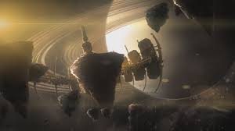

Isaac Clark was born on June 5, 2461, to Octavia and Paul Clark. His father was an engineer, but eventually became absent due to work. Which inevitably caused Octavia to join the Church of Unitology to cope. She had ended up selling their estate to the church which in turn caused Isaac to grow to hate Unitology. When he decided to follow in his fathers footsteps, that meant becoming an engineer, specifically a ship systems engineer for the Concordance Extraction Corporation. His job had eventually led him to being a part of the USG Kellion in an emergency response team to a distress call to CEC's pride and joy, the USG Ishimura. One of the main reasons Isaac joined the team was to find his girlfriend, Nicole Brennen, that he urged on to join aboard the Ishimura before it was put out of commission. When they arrived, disaster struck as they were stranded in a space ship full of things that were once the crew of the ship now turned into grotesque, mutated corpses reanimated by the marker's signal. After Isaac became the Sole survivor of the Ishimura, he was left stranded in space. Three weeks after the destruction of the Aegis VII colony, Isaac was found when he was found by an EarthGov recovery patrol team led by Captain Maxmilian Reindhardt and Xander Sklar. After he was brought back to Titan station, also known as the Sprawl, he was used as a subject for project Telomere. When the marker on Aegis VII implemented its construction code into Isaac's mind, he knew how to reconstruct the marker, and to make more markers whether he liked it or not. EarthGov scientists, led by Director Hans Tiedemann extracted those very codes from his mind. During his conquest, he finds a oh so familiar Ship docked. His ptsd kicks in as he wanders the cleaned, empty USG Ishimura, but nothing is ever that easy as old and new necromorphs make it on board. Once Isaac fights his way through the Sprawl, encountering new enemies every turn he takes, and destroys the Black Marker. This destroys Titan Station, he along with a new ally Ellie Langford escape the destruction of the facility. There were other survivors that were evacuated, but most were slaughtered by the necromorphs, or they were taken by the marker's signal. Those that were taken experienced dementia and exerted aggressive behavior towards others, causing more deaths.
